Photograph a leaf in the field. LULC Fetch recognises the crop, finds the disease with a deep-learning model trained for that crop, and tells you how to manage it. Photos taken with location on become a disease map of your fields, ready to compare with NDVI from satellite images.
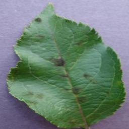
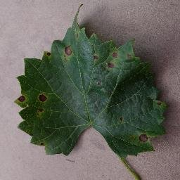
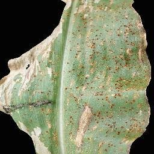
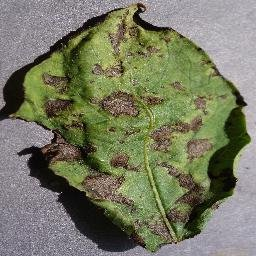
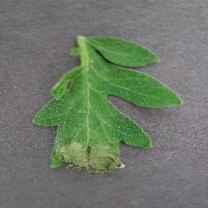
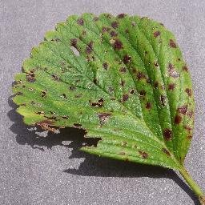
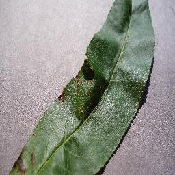
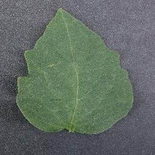
Real leaf photos from the public PlantVillage dataset (CC0), diagnosed by LULC Fetch with the crop detected automatically. Confidence is the disease model's.
Single leaf photos, or a whole folder from a field survey (up to 5,000).
Too dark, blank, blurry or not a leaf? You get "retake photo" with a tip, never a guess.
Two crop detectors recognise 42 crops, or you choose the crop yourself.
That crop's ConvNeXt model gives the top 3 diseases with confidence.
A results table, a disease map from GPS photos, and the guide's advice for each disease.
Add the photos from your phone and click Diagnose. Every photo with a GPS position becomes a point: red diseased, green healthy, orange retake. The summary counts each crop and disease, and the results table (one row per photo, with the top 3 diagnoses) opens under the map.
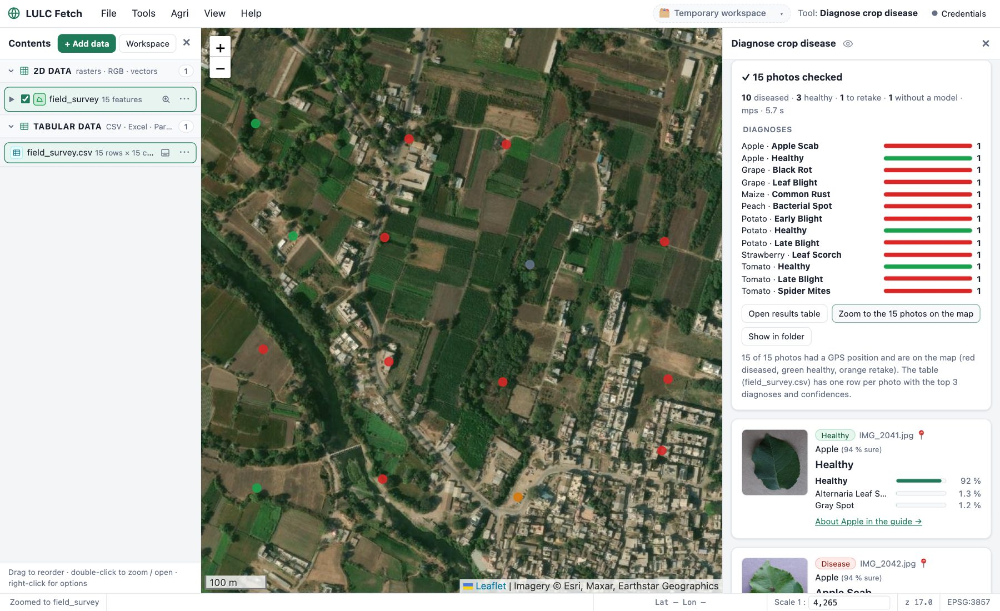
Each photo gets a card: the crop and how sure the detector is, the diagnosis with confidence bars for the three most likely diseases, and a link to read about it. Photos the models can't trust are refused with a tip on how to retake them, as in the farmer app the models come from.
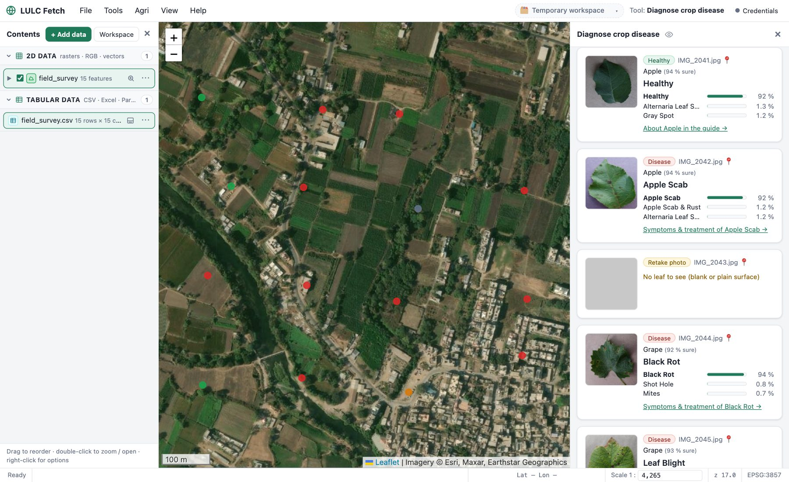
About 9,000 questions and answers by agriculture experts, from extension booklets and datasets. Pick a crop and a disease, or search with your own words (yellow leaves, fruit drop, spray schedule). Answers are grouped into symptoms, management, pests and growing practices, with the growth stage they apply to.
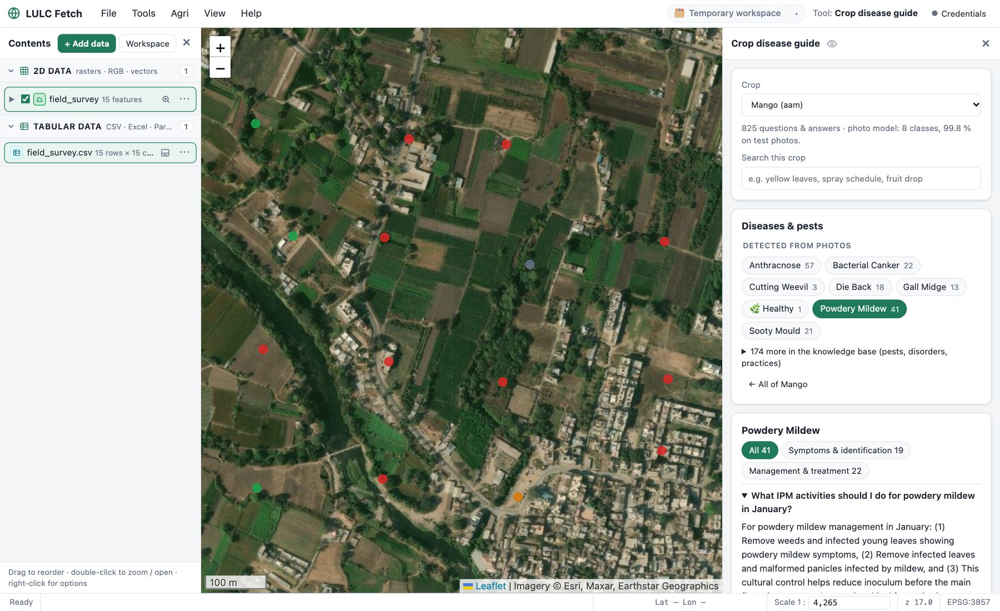
The models come from the Multi-Crop Disease Decision Support System (ConvNeXt-Small, trained on public datasets such as PlantVillage and LeafNet and on field photos). They are on Hugging Face and download by themselves the first time a crop is diagnosed (about 95 MB per crop), and each crop's model is also its own repository in this collection; the questions and answers are the open dataset crop-disease-qa. Test photos come from the same datasets the models learned from, so real field photos can score lower. Photo diagnosis supports, but doesn't replace, a local agriculture expert.
Free for Mac and Windows. No account, no cloud: everything runs on your computer.